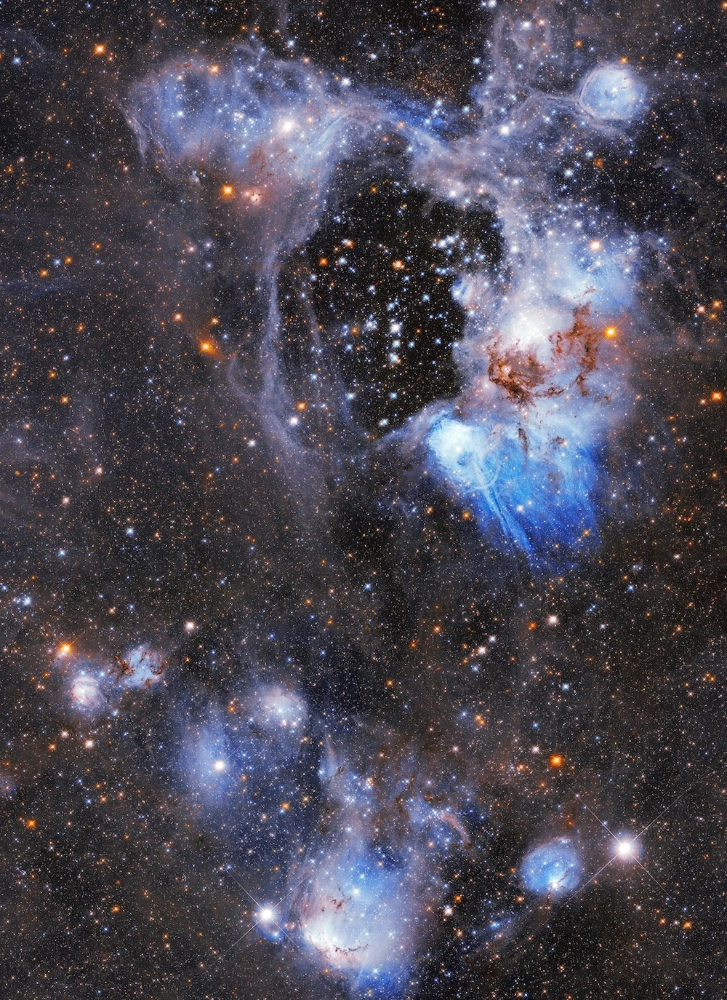
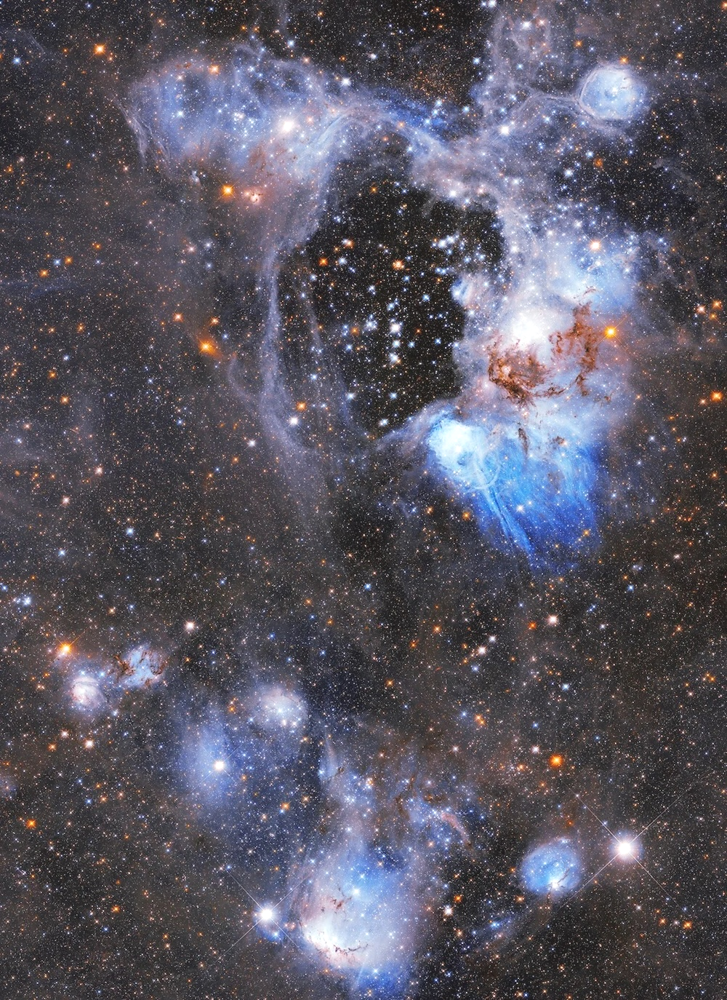

PPM Image Denoiser
C++, CMake
A C++ tool that denoises Portable Pixmap (PPM) images by averaging multiple noisy samples to produce a single clean image.
Highlights
- Pixel-level averaging: Reads an arbitrary number of noisy PPM files and averages their RGB values per pixel to reconstruct a clean output image.
- PPM parsing: Parses the P3 (ASCII) and P6 (binary) PPM formats from scratch with no external image libraries.
- CMake build system: Configured with CMake for cross-platform compilation and easy integration into larger projects.
- Command-line interface: Accepts input files and output path as arguments for quick batch processing.




→

Final Averaged Image